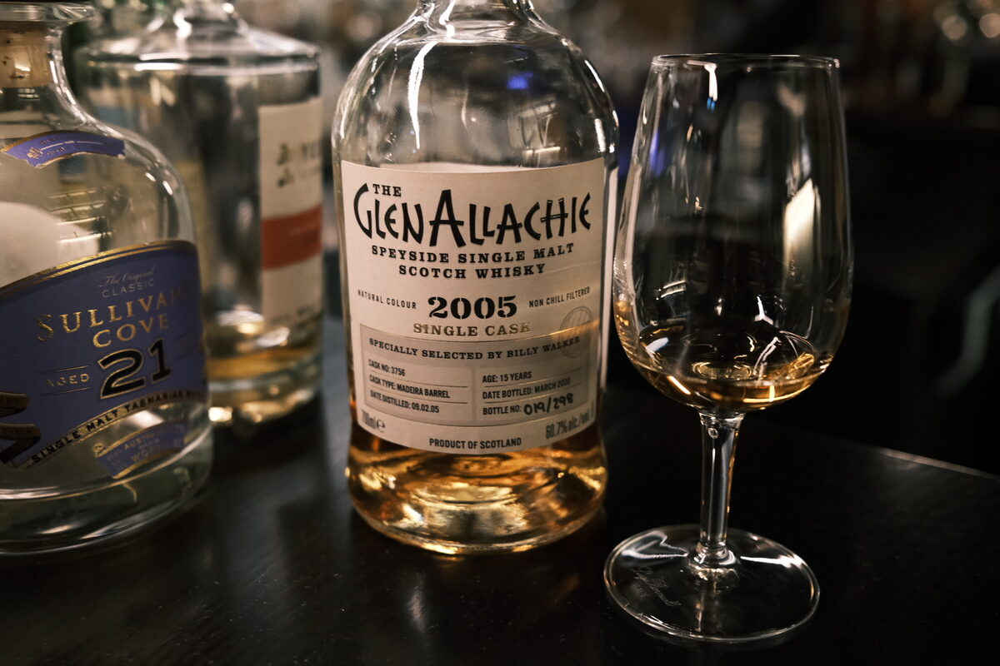

Glenallachie "Single Cask" 2005 15 years 60.7% (Madeira barrel)
Alright… full term Madeira.
Colour Oddly light. Amber, honey.
Nose Toffee apples and candied pears. Mango sorbet and vanilla ice cream. Hazelnuts and almonds. Malty. Rum and raisin… Black Forest cake. Apricot delight. Honey. With water, more wine (no loaves, fish)… fresh grapes. Milk chocolate.
Palate Juicy sweetness: hot apple juice, mulled cider. Big whack of cinnamon and cloves. Dried fruits, raisins. Brown sugar and a dollop of molasses, perhaps a thick honey. Apricots. With water, a squeeze of lemon.
Finish A little grassy, astringent, oaky. Brown sugar sweetness and fruit mince tarts. Treacle, a hint of rosemary. With water, peppermint, a touch of cream and a final brush with astringency.
Comments Cracking stuff, I swear I can taste the malt… 86/100.

Posted by Dominic on 14 Jun 2021